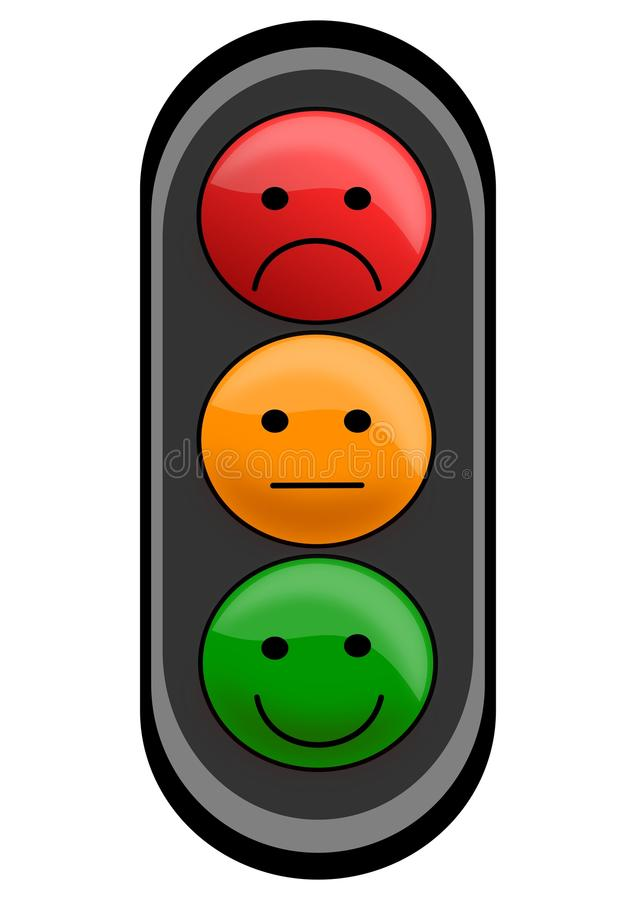

<div class="container">
  <div class="wrapper">
    <div class="text">
      <h1 class="proyect-title">Conclusion del Proyecto</h1>
      <p class="long-text">
        Este proyecto me sirvio mucho para reflexionar y ver si lo que yo
        pensaba de mi mismo estaba acertado o si una vez me miraba de una forma
        mas objetiva y viendo que hago, que no y que cosas me gustan o asipiro a
        hacer, podia tener una vision diferente de lo que yo opinaba que era.
        <br />
        En muchos de los test hay cosas que yo ya esperaba que salieran como
        salieron y otras que me pudieron llegar a sorprender por lo que me gusto
        y me parecio entretenido hacerlo para comprobar si lo que yo creia que
        me gustaba concordaba con mis hablilidades o con mi personalidad.
      </p>
    </div>
    
  </div>
</div>
